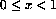

RANDOM_NUMBER(HARVEST) is a useful intrinsic especially when developing and testing code. It is an elemental SUBROUTINE so when invoked with a REAL valued argument (which has INTENT(OUT)), it will return, in its argument, a pseudorandom number or conformable array of pseudorandom numbers in the range  .
For example,
REAL HARVEST, HARVEYS(100,100,100)
CALL RANDOM_NUMBER(HARVEST)
CALL RANDOM_NUMBER(HARVEYS)
will assign a random number to the scalar variable HARVEST and an array of (different) random numbers to HARVEYS. This subroutine is very useful for numeric applications where large arrays need to be generated in order to test or time codes.
The random number generator can be seeded by user specified values. The seed is an integer array of a compiler dependent size. Using the same seed on separate invocations will generate the same sequence of random numbers.
RANDOM_SEED([SIZE=  int
int  ]) finds the size of the
seed.
]) finds the size of the
seed.
RANDOM_SEED([PUT=  array
array  ]) seeds the
random number generator.
]) seeds the
random number generator.
For example,
CALL RANDOM_SEED(SIZE=isze)
CALL RANDOM_SEED(PUT=IArr(1:isze))
CALL RANDOM_NUMBER(HARVEST)
PRINT*, "Type in a scalar seed for the generator"
READ*, iseed
CALL RANDOM_SEED(PUT=(/(iseed, i = 1, isze)/))
CALL RANDOM_NUMBER(HARVEST)
ALLOCATE(ISeedArray(isze))
PRINT*, "Type in a ", isze," element array as a seed for the generator"
READ*, ISeedArray
CALL RANDOM_SEED(PUT=ISeedArray)
CALL RANDOM_NUMBER(HARVEST)
DEALLOCATE(ISeedArray)
Using the same seed on separate executions will generate the same sequence of random numbers.
There are other optional arguments which can be used to report on which seed is in use and report on how big an array is needed to hold a seed. This procedure may also be called with no arguments in order to initialise the random number generator.